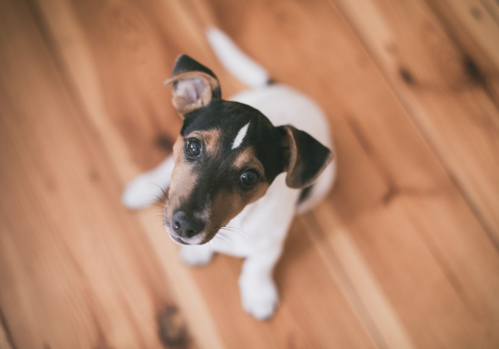
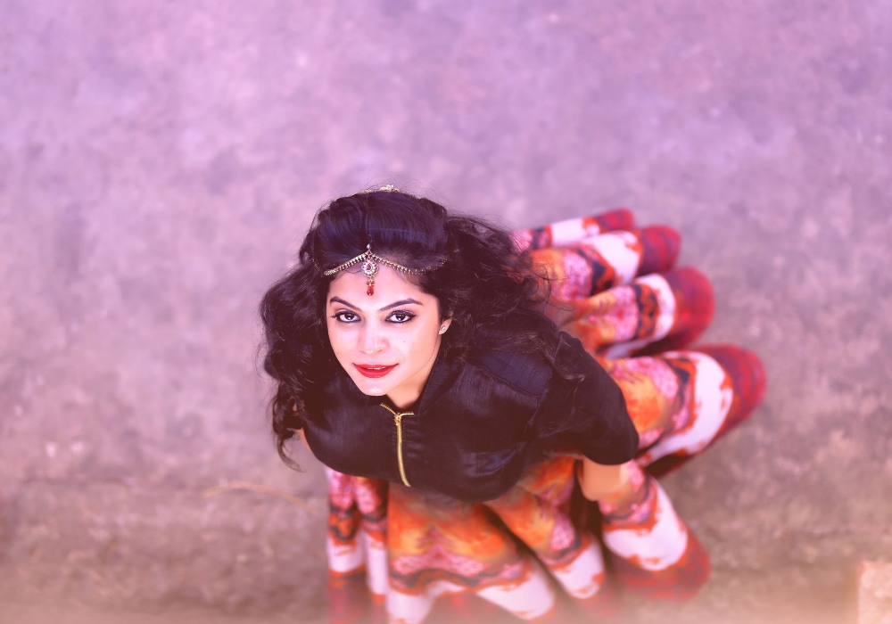

ภาพมุมสูง


การถ่ายภาพระดับสูง
คือ การถือกล้องในระดับสูงโดยยกแขนขึ้นเหนือกว่าระดับสายตา หรือยื่นอยู่ในตำแหน่งที่สูงขึ้นโดยใช้
วิธียืนบนสตูลหรือแท่นวางเท้า ตำแหน่งถ่ายภาพนี้จะช่วยเพิ่มความลึกให้กับแบ็คกราวด์ที่คุณถ่าย
เมื่อใช้วิธีนี้ร่วมกับมุมสูงจะช่วยเน้นมุมมองเปอร์สเปคทีฟให้เด่นชัด
มุมสูง การถ่ายภาพมุมสูง คือ มุมที่คุณเอียงกล้องลงต่ำไปทางตัวแบบ ซึ่งเรียกอีกอย่างว่ามุมมองนกหรือเบิร์ดอายวิว เนื่องจากวิธีนี้สามารถเก็บภาพของ
ตัวแบบได้ทั้งหมด ภาพที่ปรากฏจึงแสดงรายละเอียดและถ่ายทอดบรรยากาศโดยรอบที่คุณเห็นได้อย่างชัดเจน
เนื่องจากภาพลักษณะนี้มักมีพื้นดินเป็นแบ็คกราวด์ คุณอาจต้องการปรับการเลือกแบ็คกราวด์ด้วยเช่นกัน